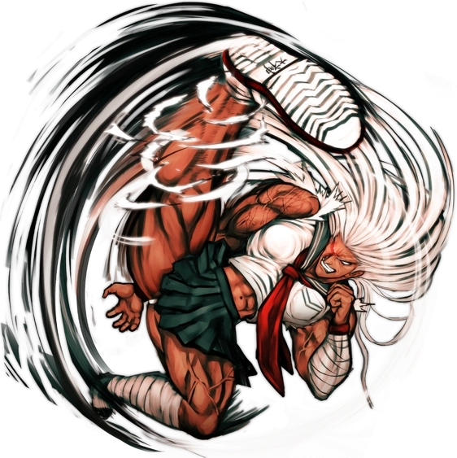
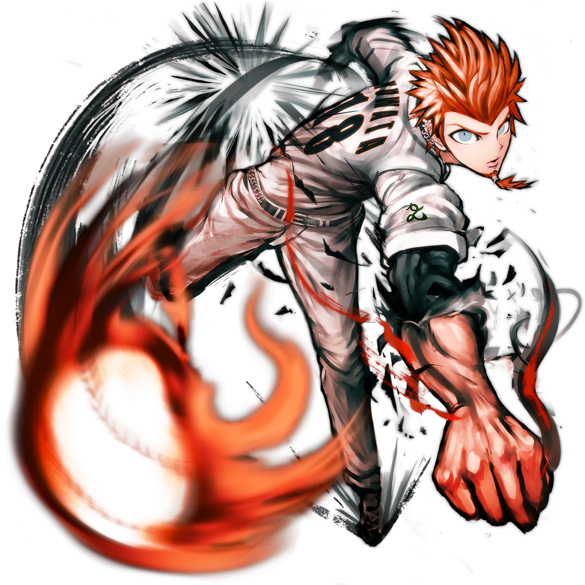
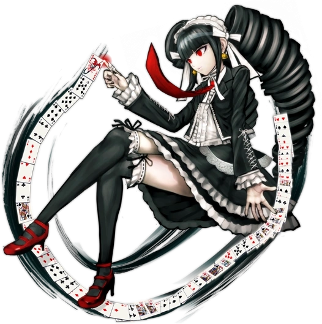
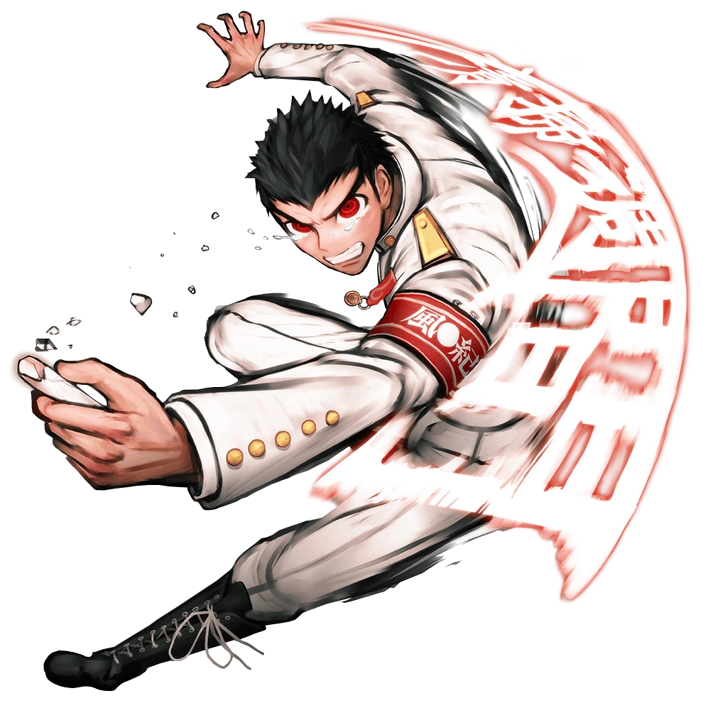

Makoto Naegi
- Talento
- Estudiante Afortunado Definitivo
- Cumpleaños
Personajes de Danganronpa: Trigger Happy Havoc
¡AVISO SPOILER! Si entras a la ficha d cualquier personaje, saldrán spoilers.






